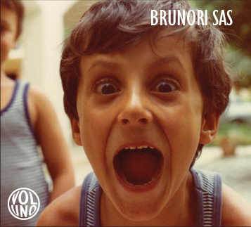
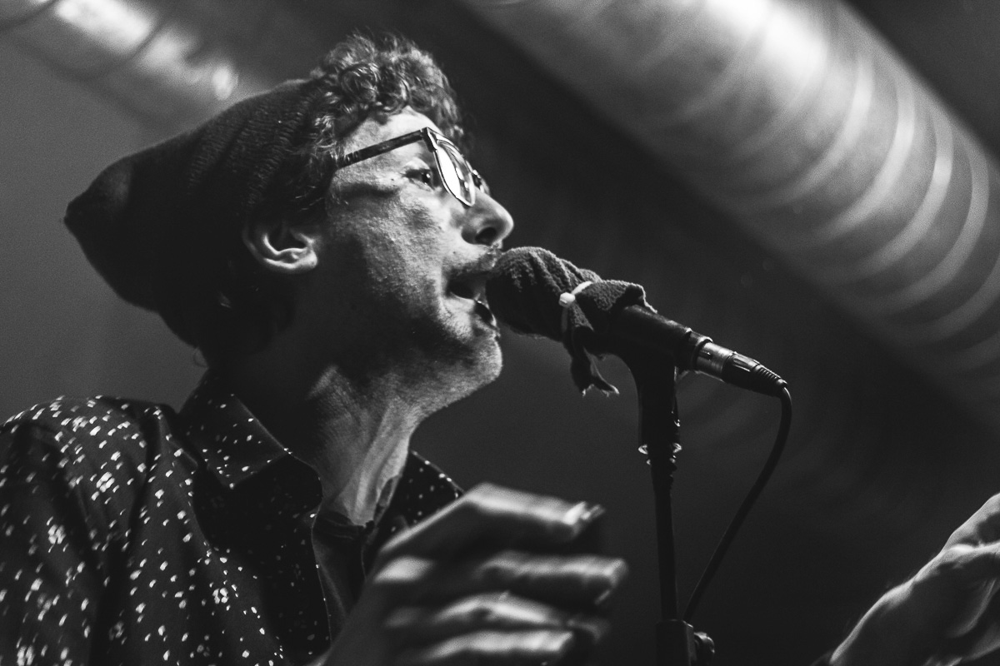
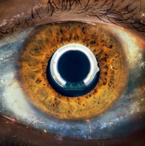

Titolo: L’anima non conta
Cantante/Autore: The zen circus
Album:La terza guerra mondiale
Anno: 2016
L'incedere del tempo investe come un treno illusioni,ideali,ricordi attraversandoli e dissolvendoli. Le note di una chitarra ospitano l'alba della vita adulta, al realismo e al tramonto dei sogni. “Ma tu libera e veloce vai, mi ritrovi dove sai.” Non è tutto perduto. Negli anfratti della memoria c'è lei, c'è il ricordo, c'è quello che eri. Nostalgia, carisma ed energia si fondono in questo brano, da cantare, urlare viaggiando in autostrada o davanti ad una pinta di birra, anzi due nel proprio posto, quello di sempre.
Note da bere in compagnia di una birra in stile English Pale Ale , colore ambrato, gusto fortemente maltato.
Acustica Stonata
Autori: Prozac+
titolo: Acustica Stonata
Album: gioia nera
Anno: 2004
Gioia nera, il nome dell'album. Estremamente evocativo a nostro avviso anche di questo brano. Genere electro. Danzare su queste note, può rivelarsi davvero liberatorio. Un brano che canta di un dolore, quasi disperato, ma mai urlato, in una danza in cui ogni forma di controllo e inibizione arretra.
Note da bere in compagnia di un classico e vibrante Black Russian.
Questa canzone, inconfondibilmente estiva, evasione e distrazione da una relazione ormai in macerie, brano leggero e irriverente. La nota di malinconia intrisa in un ritmo coinvolgente e concitato, leit motiv della discografia di frah ci restituisce un brano estremamente versatile, adatto a molteplici occasioni.
Note da Bere in compagnia di un cocktail a base di rum e blue curacao.
Ingredienti:
1/2 oncia di rum bianco, rum malibu e blue curaçao ;
1 oncia di sweet and sour mix ;
1/2 oncia di lemon-lime soda ;
ghiaccio;
Fetta di lime per guarnire .
titolo: La nostra ultima canzone
Autore:Motta
album: vivere o morire
anno: 2018
Elogio al cambiamento, alla crisi, al fermarsi per l'ultima volta, e poi,
ricominciare. La malinconia è dolce, attesa di un momento di svolta in cui cambierà tutto, eppure invito a trattenere l'istante, fotografarlo, assaporarlo e viverlo intensamente, esattamente prima che tutto cambi. Questo ci evoca questo brano, una scarica di emozioni non indifferente.
Note da Bere in compagnia di un Boulevardier, a base di whiskey. Bitter rosso e campari.

Titolo: Questo nostro grande amore
Autore: Brunori Sas
album: vol.1
anno: 2009
Guardia piemontese, Calabria.
Brunori come pochi altri, racconta una storia, la sua, racconta l'amore. Congiunge e disgiunge, un passato di una infanzia, colorata, leggera, innocente e ingenua che non conosce l'amore, e un presente fatto di tormenti, di tribolazioni e sofferenza per lei, sempre lei. Sembra una storia a lieto fine, sbocciata il 31 d'agosto, all'alba di settembre. L'intero brano, una narrazione autobiografica di dolci e agrodolci ricordi estivi, cose che cambiano e cose che, non cambiano affatto.
Musica da cantare in viaggio, o, sotto suggerimento dell'autore, davanti a un falò estivo in spiaggia.
Note da bere in compagnia di una cassa di birre Peroni, rigorosamente ghiacciate.
Willie Peyote
Titolo: Giusto la metà di me
Cantante/Autore: Willie Peyote
Album: Sindrome di toret
Anno: 2017
Un pianoforte, una voce accorata, appassionata quella di Guglielmo in arte Willie. Estremamente autoreferenziale, un flusso di coscienza progressivamente più incalzante che dischiude un malcelato fastidio, poi quasi dolore, insofferenza verso sé stessi , senso di inadeguatezza e diffidenza. Uno stacco strumentale offre spazio alla propria introspezione, al proprio sé e ai propri pensieri , che non sono così diversi da quelli di tutti gli altri. “In ostaggio” della nostra testa, invischiati nei nostri timori, che sono tanto nostri, quanto universali.
Note da bere in compagnia di un lento e corposo calice di vino rosso, magari un ottimo barbera d'asti piemontese docg.


Autori: I cani
titolo: Questo nostro grande amore
album: Aurora
anno: 2016
Brano struggente che sussurra e celebra un amore, l'amore, quello più puro, viscerale e autentico, universale, senza troppe complicazioni e struggimenti.
Note da bere in compagnia di due calici di Chianti rosato dei colli Euganei.